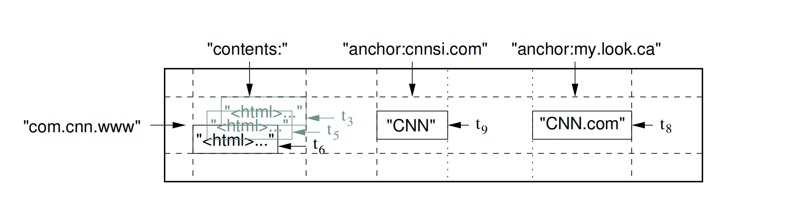

论文-原件
Bigtable: 结构化数据分布式存储系统
摘要
Bigtable 是一个旨在扩展到大规模的用于管理结构化数据的分布式存储系统：横跨数千台服务器的PB级别的数据量。在谷歌，很多项目都把数据存储在了Bigtable中，包括搜索引擎（web indexing），谷歌地球（Google Earth），谷歌财经（Google Finance）。这些不同的应用都对Bigtable有着不同的场景要求，既体现在数据大小方面（从网址到网页再到卫星图像），也体现在延迟性要求方面（从后端批处理到实时数据服务）。不管再怎么多样化的需求，Bigtable都成功的对所有的谷歌产品提供了灵活、高性能的解决方案。在这篇论文中，我们叙述了Bigtable提供的简单数据模型，它是怎样让客户端动态的控制数据的分布和格式，以及Bigtable的设计与实现。
1. 引言
在过去的两年半中，我们设计、实现并部署了一个名为 Bigtable 的分布式存储系统，用于在 Google 管理结构化数据。Bigtable 旨在可靠地扩展至 PB 级数据和数千台服务器。Bigtable 实现了多个目标：广泛的适用性、可扩展性、高性能以及高可用性。目前，超过六十个 Google 产品和项目使用 Bigtable，包括 Google Analytics（谷歌分析）、Google Finance（谷歌财经）、Orkut、个性化搜索（Personalized Search）、Writely（即后来的 Google Docs）以及 Google Earth（谷歌地球）。这些产品将 Bigtable 用于各种高要求的工作负载，范围从面向吞吐量的批处理任务，到对延迟敏感的、面向最终用户的数据服务。这些产品所使用的 Bigtable 集群配置差异很大，从几台服务器到数千台服务器不等，存储的数据量最多可达数百 TB。
在许多方面，Bigtable 与传统数据库相似：它与许多数据库系统共享了不少实现策略。并行数据库 [14] 和内存数据库 [13] 也实现了可扩展性和高性能，但 Bigtable 提供的接口与这些系统不同。Bigtable 并不支持完整的关係型数据模型；相反，它为客户提供了一个简单的数据模型，该模型支持对数据布局和格式的动态控制，并允许客户根据底层存储中数据的局部性特性进行优化设计。
数据通过任意字符串作为行名和列名进行索引。Bigtable 将数据视为未解释的字符串（uninterpreted strings），尽管客户通常会将各种结构化或半结构化数据序列化为这些字符串。客户可以通过在模式（schema）设计上的精心选择，来控制其数据的局部性。最后，Bigtable 的模式参数允许客户动态控制数据是从内存中提供服务，还是从磁盘读取。
第 2 节 更详细地描述了 Bigtable 的数据模型，第 3 节 概述了客户端 API。第 4 节 简要介绍了 Bigtable 所依赖的底层 Google 基础设施。第 5 节 描述了 Bigtable 实现的基本原理，第 6 节 介绍了一些我们为提升 Bigtable 性能所做的优化改进。第 7 节 提供了 Bigtable 性能的实测数据。我们在 第 8 节 给出了 Bigtable 在 Google 内部使用的若干实例，第 9 节 讨论了我们在设计和维护 Bigtable 过程中所获得的经验教训。最后，第 10 节 描述了相关工作，第 11 节 给出了我们的结论。
2. 数据模型
Bigtable 是一个稀疏的、分布式的、持久化的多维有序映射。该映射通过行键（row key）、列键（column key）和时间戳（timestamp）进行索引；映射中的每个值都是一个未解释的字节数组。
(row:string, column:string, time:int64) → string  图-1. 一个存储网页信息的示例表格的切片。行名称是一个URL地址倒叙字符串。contents列族包含的是页面内容，anchor这一列包含指向该页面的所有锚点。CNN的主页被《体育画报》和MY-look主页同时引用，因此该行包含anchor:cnnsi.com和anchor:my.look.ca的列名称。每个锚点单元格有一个版本；内容列有三个版本，他们对应时间戳分别为t3、t5和t6。
在考察了类似 Bigtable 系统的各种潜在用途之后，我们最终确定了这一数据模型。一个推动我们部分设计决策的具体例子是：假设我们希望保存一份大规模网页及其相关信息的副本，供许多不同的项目使用；我们称这个特定的表为 Webtable。在 Webtable 中，我们将使用 URL 作为行键，使用网页的各个方面作为列名，并将网页内容存储在 contents: 列下，同时记录内容被抓取时的时间戳。如图1所示。
行
表格中的行键是任意字符串（当前最大可达 64KB，尽管对于我们大多数用户来说，典型的大小是 10 到 100 字节）。在单个行键下的数据读取或写入操作都是原子性的（无论该行中涉及多少不同的列进行读取或写入），这一设计决策使得客户端在处理对同一行并发更新时更容易推理系统的行为。
Bigtable 按行键的字典序维护数据。表的行范围是动态划分的，每个行范围称为一个 tablet，它是数据分布和负载均衡的基本单位。因此，对较短行范围的读取操作非常高效，通常只需要与少量机器通信。
客户端可以通过精心选择行键，利用这一特性来优化数据访问的局部性。例如，在 Webtable 中，为了将同一域名下的网页聚集在一起，我们通过反转 URL 中的主机名组件来组织行键。比如，我们会将 maps.google.com/index.html 的数据存储在键 com.google.maps/index.html 下。
将同一域名下的页面存储在相邻的行中，使得对主机和域名的某些分析操作更加高效。
列族
列键被分组为若干集合，称为列族（column families），列族是访问控制的基本单位。存储在同一个列族中的所有数据通常具有相同的类型（我们会将同一列族内的数据一起进行压缩）。在向某个列族下的任意列键存储数据之前，必须先创建该列族；一旦列族被创建，就可以使用该族内的任意列键。
我们的设计意图是：一张表中的不同列族数量应保持较少（最多几百个），并且在系统运行期间列族很少发生变化。相比之下，一张表可以拥有无限数量的列。
列键的命名采用以下语法：family:qualifier（列族名:列限定符）。
列族名必须是可打印字符（即可见的、合法的字符串）； 列限定符（qualifier） 则可以是任意字符串。 在 Webtable 中，一个示例列族是 language，用于存储网页所使用的语言。我们在 language 列族中只使用一个列键，用来存储每个网页的语言标识（如 "en" 表示英语，"zh" 表示中文）。
另一个对该表有用的列族是 anchor；该列族中的每个列键代表一个单独的锚点（即反向链接），如图 1 所示。其中，列限定符 是引用该网页的站点名称，单元格内容 则是该链接的锚文本（即超链接的显示文字）。
访问控制，以及磁盘和内存使用量的统计，都是在列族级别上进行的。在我们的 Webtable 示例中，这种机制使我们能够管理多种不同类型的应用程序：
一些应用可以添加新的基础数据， 一些应用可以读取基础数据并创建衍生的列族， 还有一些应用则仅被允许查看现有数据（出于隐私考虑，甚至可能无法查看所有现有的列族）。
时间戳
3. API
4. 模块构建
5. 实现
6. 优化
7. 性能评估
8. 真实应用
9. 经验教训
10. 相关工作
11. 结论
参考文献
[1] ABADI, D. J., MADDEN, S. R., AND FERREIRA, M. C. Integrating compression and execution in columnoriented database systems. Proc. of SIGMOD (2006).
[2] AILAMAKI, A., DEWITT, D. J., HILL, M. D., AND SKOUNAKIS, M. Weaving relations for cache performance.In The VLDB Journal (2001), pp. 169–180.
[3] BANGA, G., DRUSCHEL, P., AND MOGUL, J. C. Resource containers: A new facility for resource management in server systems. In Proc. of the 3rd OSDI (Feb. 1999), pp. 45–58.
[4] BARU, C. K., FECTEAU, G., GOYAL, A., HSIAO, H., JHINGRAN, A., PADMANABHAN, S., COPELAND,G. P., AND WILSON, W. G. DB2 parallel edition. IBM Systems Journal 34, 2 (1995), 292–322.
[5] BAVIER, A., BOWMAN, M., CHUN, B., CULLER, D., KARLIN, S., PETERSON, L., ROSCOE, T., SPALINK, T.,AND WAWRZONIAK, M. Operating system support for planetary-scale network services. In Proc. of the 1st NSDI(Mar. 2004), pp. 253–266.
[6] BENTLEY, J. L., AND MCILROY, M. D. Data compression using long common strings. In Data Compression Conference (1999), pp. 287–295.
[7] BLOOM, B. H. Space/time trade-offs in hash coding with allowable errors. CACM 13, 7 (1970), 422–426.
[8] BURROWS, M. The Chubby lock service for looselycoupled distributed systems. In Proc. of the 7th OSDI(Nov. 2006).
[9] CHANDRA, T., GRIESEMER, R., AND REDSTONE, J.Paxos made live — An engineering perspective. In Proc.of PODC (2007).
[10] COMER, D. Ubiquitous B-tree. Computing Surveys 11, 2(June 1979), 121–137.
[11] COPELAND, G. P., ALEXANDER, W., BOUGHTER,E. E., AND KELLER, T. W. Data placement in Bubba. In Proc. of SIGMOD (1988), pp. 99–108.
[12] DEAN, J., AND GHEMAWAT, S. MapReduce: Simplified data processing on large clusters. In Proc. of the 6th OSDI(Dec. 2004), pp. 137–150.
[13] DEWITT, D., KATZ, R., OLKEN, F., SHAPIRO, L., STONEBRAKER, M., AND WOOD, D. Implementation techniques for main memory database systems. In Proc. of SIGMOD (June 1984), pp. 1–8.
[14] DEWITT, D. J., AND GRAY, J. Parallel database systems: The future of high performance database systems. CACM 35, 6 (June 1992), 85–98.
[15] FRENCH, C. D. One size fits all database architectures do not work for DSS. In Proc. of SIGMOD (May 1995), pp. 449–450.
[16] GAWLICK, D., AND KINKADE, D. Varieties of concurrency control in IMS/VS fast path. Database Engineering Bulletin 8, 2 (1985), 3–10.
[17] GHEMAWAT, S., GOBIOFF, H., AND LEUNG, S.-T. The Google file system. In Proc. of the 19th ACM SOSP (Dec. 2003), pp. 29–43.
[18] GRAY, J. Notes on database operating systems. In Operating Systems — An Advanced Course, vol. 60 of Lecture Notes in Computer Science. Springer-Verlag, 1978.
[19] GREER, R. Daytona and the fourth-generation language Cymbal. In Proc. of SIGMOD (1999), pp. 525–526.
[20] HAGMANN, R. Reimplementing the Cedar file system using logging and group commit. In Proc. of the 11th SOSP (Dec. 1987), pp. 155–162.
[21] HARTMAN, J. H., AND OUSTERHOUT, J. K. The Zebra striped network file system. In Proc. of the 14th SOSP (Asheville, NC, 1993), pp. 29–43.
[22] KX.COM. kx.com/products/database.php. Product page.
[23] LAMPORT, L. The part-time parliament. ACM TOCS 16, 2 (1998), 133–169.
[24] MACCORMICK, J., MURPHY, N., NAJORK, M., THEKKATH, C. A., AND ZHOU, L. Boxwood: Abstractions as the foundation for storage infrastructure. In Proc. of the 6th OSDI (Dec. 2004), pp. 105–120.
[25] MCCARTHY, J. Recursive functions of symbolic expressions and their computation by machine. CACM 3, 4 (Apr. 1960), 184–195.
[26] O’NEIL, P., CHENG, E., GAWLICK, D., AND O’NEIL, E. The log-structured merge-tree (LSM-tree). Acta Inf. 33, 4 (1996), 351–385.
[27] ORACLE.COM. www.oracle.com/technology/products/-database/clustering/index.html. Product page.
[28] PIKE, R., DORWARD, S., GRIESEMER, R., AND QUINLAN, S. Interpreting the data: Parallel analysis with Sawzall. Scientific Programming Journal 13, 4 (2005),227–298.
[29] RATNASAMY, S., FRANCIS, P., HANDLEY, M., KARP,R., AND SHENKER, S. A scalable content-addressable network. In Proc. of SIGCOMM (Aug. 2001), pp. 161–172.
[30] ROWSTRON, A., AND DRUSCHEL, P. Pastry: Scalable, distributed object location and routing for largescale peer-to-peer systems. In Proc. of Middleware 2001(Nov. 2001), pp. 329–350.
[31] SENSAGE.COM. sensage.com/products-sensage.htm.Product page.
[32] STOICA, I., MORRIS, R., KARGER, D., KAASHOEK,M. F., AND BALAKRISHNAN, H. Chord: A scalable peer-to-peer lookup service for Internet applications. In Proc. of SIGCOMM (Aug. 2001), pp. 149–160.
[33] STONEBRAKER, M. The case for shared nothing.Database Engineering Bulletin 9, 1 (Mar. 1986), 4–9.
[34] STONEBRAKER, M., ABADI, D. J., BATKIN, A., CHEN,X., CHERNIACK, M., FERREIRA, M., LAU, E., LIN, A., MADDEN, S., O’NEIL, E., O’NEIL, P., RASIN,A., TRAN, N., AND ZDONIK, S. C-Store: A columnoriented DBMS. In Proc. of VLDB (Aug. 2005), pp. 553–564.
[35] STONEBRAKER, M., AOKI, P. M., DEVINE, R.,LITWIN, W., AND OLSON, M. A. Mariposa: A new architecture for distributed data. In Proc. of the Tenth ICDE(1994), IEEE Computer Society, pp. 54–65.
[36] SYBASE.COM. www.sybase.com/products/databaseservers/sybaseiq. Product page.
[37] ZHAO, B. Y., KUBIATOWICZ, J., AND JOSEPH, A. D.Tapestry: An infrastructure for fault-tolerant wide-area location and routing. Tech. Rep. UCB/CSD-01-1141, CS Division, UC Berkeley, Apr. 2001.
[38] ZUKOWSKI, M., BONCZ, P. A., NES, N., AND HEMAN,S. MonetDB/X100 — A DBMS in the CPU cache. IEEE Data Eng. Bull. 28, 2 (2005), 17–22.